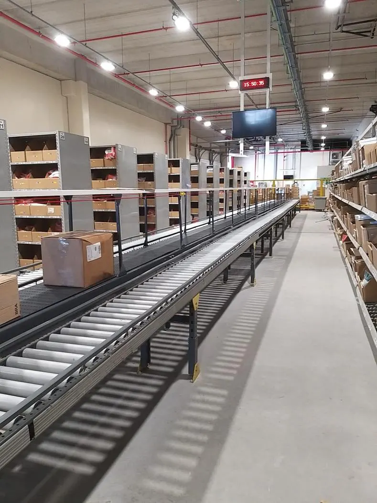
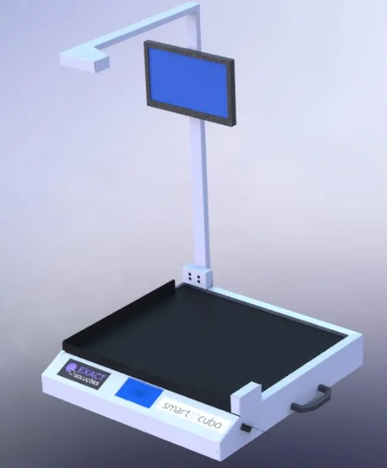
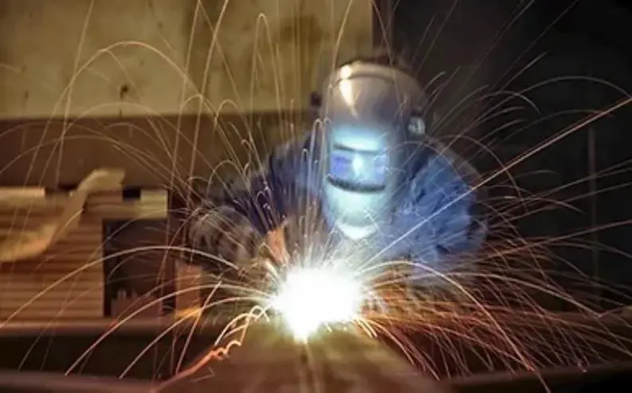

Etapa 1Recebimento na rampa de descarga
Pensar fora da caixa. Automatizar dentro dela.
A Exact projeta e fabrica as máquinas que movem, medem e separam cada volume do seu centro de distribuição. Do caminhão que chega ao caminhão que sai.
- até 2.200
- volumes por hora na cubagem dinâmica
- 80 kg
- capacidade por volume medido
- Rodeio/SC
- projeto e fabricação
Role a página para ligar a esteira
Etapa 2Transporte e movimentação
Lona, roletes ou modular. A esteira certa para cada carga.
Estrutura em aço carbono com pintura eletrostática, motorredutores WEG e cordão de emergência em toda a lateral. Cada linha é dimensionada para o produto, o layout e o ritmo da sua operação.
- Lona25 a 1.200 mm de largura. Aceita aclive, declive e curvas. Triagem, carga e objetos pesados.
- Roletes50 a 1.300 mm, ajuste de 1 em 1 mm. Manutenção baixa e comprimento livre.
- ModularLinhas longas de picking, carga e descarga em CDs de e-commerce.


Etapa 3Cubagem dinâmica Advanced Laser
Mediu, pesou e leu. Sem parar a linha.
O dimensionador a laser mede volumes irregulares em movimento, a balança pesa e a leitora captura o código de barras automaticamente. Para bancadas, a SmartCubo Standard faz o mesmo de forma estática, com balança homologada pelo INMETRO.
- 2.200pacotes por hora
- 200 g a 80 kgfaixa de pesagem
- 3×5×5 a 100×90×140cm por volume
- 25 m²de área de instalação


Etapa 4Integração de dados
Cada medida vira dado no seu sistema.
Integração padrão via webservice com qualquer ERP, WMS ou TMS do mercado. O frete passa a ser calculado com o peso cubado real, volume a volume, com rastro de quando e onde cada caixa foi medida.
{
"volume": "EX-48213",
"altura_cm": 32,
"largura_cm": 45,
"comprimento_cm": 60,
"peso_kg": 8.42,
"rota": "SC-02",
"status": "cubado"
}Etapa 5Triagem no sorter
Cada volume desviado para a rota certa.
Com o código lido na cubagem, o sorter sabe o destino de cada caixa e a desvia para a rampa da rota, sem ninguém precisar tocar no volume. Disponível em versão modular e pneumática, esta com projeto patenteado.


Etapa 6Expedição e carregamento
Do sorter direto para dentro do baú.
O transportador modular de carga e descarga entra no caminhão e leva o volume até o fundo do baú. Projeto patenteado, com rampas de carga e descarga sob medida para cada doca.


Etapa 7Fábrica em Rodeio/SC
Tudo isso sai daqui. Peça por peça.
- UsinagemTorno CNC, torno convencional e fresa, com laboratório de metrologia.
- RoletesTubo galvanizado de 50,8 mm, eixo maciço de 15 mm e rolamentos 6002.
- Solda e pinturaMIG, MAG e TIG em inox, alumínio e aço carbono. Pintura eletrostática a pó.
- NR12 e assistênciaAdequação de máquinas à norma e técnicos em campo para manutenção.


Etapa 8Quem já roda com a Exact
Operações que não podem parar.
Transportadoras, operadores de e-commerce e centros de distribuição que movimentam milhares de volumes por dia.
- J&T Express
- Rodonaves
- Saturno Brasil
- FM Transportes
- Ícaro Express
- R3 Express
- Vestra
- Aceville
- Duloc
- Dia & Noite

DestinoFim do percurso
A próxima entrega é na sua operação.
Conte como funciona o seu centro de distribuição hoje. A Exact desenha a linha, fabrica e instala.
Fábrica: R. Ribeirão do Salto, 156, Rodeio/SC, CEP 89136-000